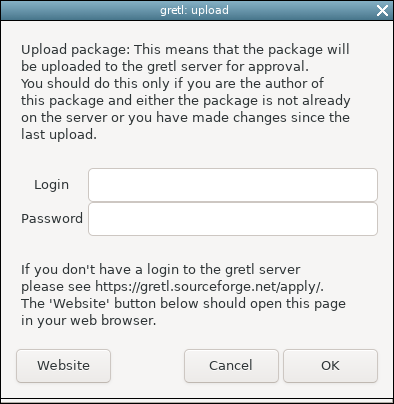

[gretl main page]
Creating a gretl function package: a guide for dummies
Stefano Fachin, Università di Roma "La Sapienza", February 2021
Summary
Creating a function package is, believe it or not, much easier and
more useful than you might think. Useful because sharing code, even if
naive and inefficient, can save other people lots of time and
effort. Easier because the process only requires grasping some
fundamental steps, which we shall illustrate in this "Guide for
Dummies". Of course, everything we shall say is explained more
accurately and in more depth in the Gretl Function Package
Guide (hereinafter simply the Guide), to which we refer for
any doubt. The Guide can be found under gretl's Help menu, or
on
sourceforge.
1 Introduction
As explained at the beginning of the Guide, a "function
package" is simply a file which "packages", hence the name, four
different objects:
the hansl code for the function (actually, there can be more
than one, but we shall stick to the basic case of a single
function);
information on author, version, date, etc. (the "metadata" of
the package);
some help text explaining what the function does; and
a sample script that illustrates its use.
The extension for files of this type is gfn; therefore,
I will use "function package" and "gfn file" as synonyms.
2 A simple example
Suppose you have written a function for your own needs and decide
to share it on gretl's server. Since the metadata items (piece 2) are
simple and will be inserted easily in due course, the only actual
extra work you have to do is to write pieces (3) and (4), the help
text and sample script, and assemble the four pieces.
Following the example in the Guide, suppose that you have
written a function, say pc, which computes the series of
percentage changes from a given series. You'll make this function
available via a function package whose name will
be pcchange. The function is:
function series pc(series y "Series to process")
series ret = 100 * diff(y)/y(-1)
return ret
end function
You now need the Help text and the Sample script.
Help text: not much to be said, just explain what the
different inputs are and what output will be obtained. A plain text
file with lines around 70 characters wide, nice to be read in a small
window, will do. Here something like this will suffice:
This function computes the percentage changes of a given series.
inputs: x, a series
output: the percentage change of x, a series
Sample script: this requires some details. Quoting from the
Guide, in the first line of the script write
include pcchange.gfn
This will ensure that your packaged pc function is
available in the rest of the script. Then open a dataset. The
simplest choice is to use one of those supplied with gretl. For
instance, to open Søren Johansen's Danish macroeconomic data write:
open denmark.gdt
Then write a couple of lines which run your function and use its
output (possibly, with a few explanatory comments). Therefore, the
sample script which computes and prints the percentage change of the
variable LRM included in the Johansen dataset will look something like
this:
include pcchange.gfn
open denmark.gdt # open Johansen's dataset
series pcLRM = pc(LRM) # compute percentage change for LRM
print LRM pcLRM --byobs
We now have all the pieces. We just need to put them together in the
gfn file.
3 Putting the pieces together
To put everything together into a gfn file, the GUI offers an handy
tool, but there is a catch: it works only on functions already loaded
in gretl's workspace. Don't worry, this simply means that before using
the tool you have to run the function: since you probably used gretl's
script editor to write the function in the first place, running that
as a script (by clicking on the "gears" icon) will do.
|
Once this is done, all you have to do is open the File > Function
packages > New package menu item from the gretl main window. A box
with a familiar look, very similar to the one offered to select the
variables for a regression, will appear (Fig. 1).
Select the pc function for packaging (blue background in
Fig. 1) and move it in the area "Public functions" on the right using
the green arrow. Then just fill in the box on the top with package
name (pcchange in this case) and hit OK.
In case you are curious: "Helper functions" are those used in
the background by public functions (that is, they are included in
packages but are not visible to users). In our simple example there
are no such functions.
|
 |
| Figure 1: Selecting a function for
creating a package. |
|
|
A window for entering the metadata should now appear
(Fig. 2). Here you type your name, e-mail address and a
one-line description of the package. If you plan to publish
your package (see below), it is preferable to use an e-mail
address that you check frequently, because that is what the
gretl administrators would use to contact you if there was any
problem with your package, not to mention package users who
may need to ask for your assistance.
In this window, you also choose one or two tags (here we choose
"General" and "Univariate Time-Series Models", somehow restrictive but
certainly relevant) and, if relevant, the type of data required for
the function (here time series). Since your function can work with any
version of gretl, simply accept the "Minimum gretl version" of 2011a
offered by the system.
|
 |
| Figure 2: Entering the package metadata |
|
|
You now need only two more steps: inserting the Help text and the
Sample script. The area for the Help text is on the right of the
window, near the bottom. If you created a PDF file you can upload it
by clicking on the "PDF file" option, otherwise select the "plain
text" option and click on "Edit". This opens an editor window in which
you type your text. When you are done save and exit (Fig. 3).
|
 |
| Figure 3: Creating the Help in text format |
|
|
The next step is creating the sample script. In the last line click
on "Edit sample script". This will open a script editor window in
which the first line is preset to include the newly created
package. Insert the rest of your code, save and exit (Fig. 4).
|
 |
| Figure 4: Creating the sample script
|
|
You are almost done. An additional, not strictly necessary, step is
related to a cute gretl functionality: function packages can be
attached to the native gretl menus of the GUI (in other words, your
package may sit next to those found out-of-the-box when installing
gretl: isn't that cool?). For that purpose, you will need to set a few
parameters. To do so, click on the button "Extra properties" at the
bottom (Fig. 5).
 |
| Figure 5: Selecting the "Extra properties" item |
|
This will open a box with various tabs (Fig. 6). Select the second
from the left, "Menu attachment". There you find a few options to
choose, for instance whether you wish the menu-item for your function
to appear in the main window or in a secondary, model window. Here the
obvious choice is "main window", while "model window" would
have been a more appropriate choice for a function computing, say,
model residual diagnostics.
You can also type some Help text for the GUI. All details are
explained in the Help (button on the bottom left in Fig. 6). When you
have finished, click "Apply" and then "Close".
This leads you back to main packager window (the one in
Fig. 5). Click on "Save" and choose the option "gfn file" You can
either let gretl choose where to save it or pick your own location,
but the safest option is to let gretl choose for you. (See Fig. 7
below.)
|
 |
| Figure 6: giving the package a menu attachment |
|
 |
| Figure 7: Saving the package as a gfn file |
To check that everything is OK now click on "Validate". If you see
something like Fig. 8, then your package is working properly. Good
job!
 |
| Figure 8: Validation message |
4 Uploading your package
At this point, your function happily sits on your computer with
"package" status. Since it deserves to be distributed,
let's move to the publishing step.
The first thing you need is a gretl ID: if you don't have one
already, open the address
https://gretl.sourceforge.net/apply/
in your browser and apply for a ID.
Once you have an ID, go to "File > Function packages > Upload
package" in the gretl main-window menu and select your package (See Figs 9
and 10).
 |
| Figure 9: Selecting a package for upload, step 1 |
 |
| Figure 10: Selecting a package for upload, step 2 |
Once you have selected your package you will be asked for
your login information (Fig. 11), and can perform the upload. Now you
have simply to wait for the administrators to check your
submission. Congratulations!
|  |
| Figure 11: Logging in to upload a package |
And that's all for now.